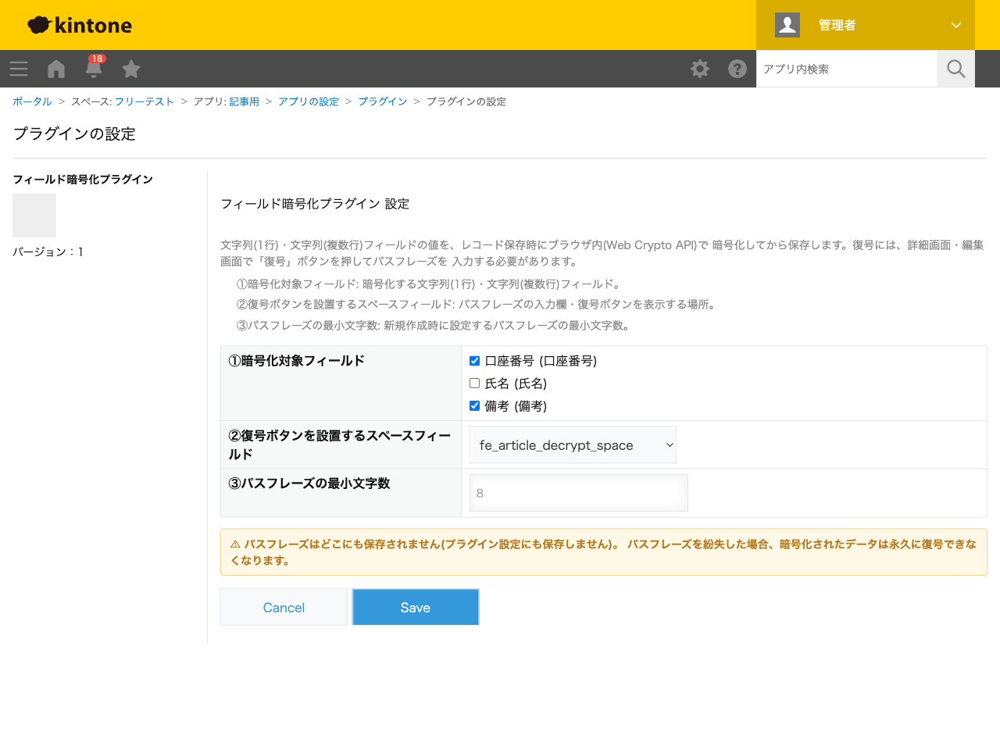
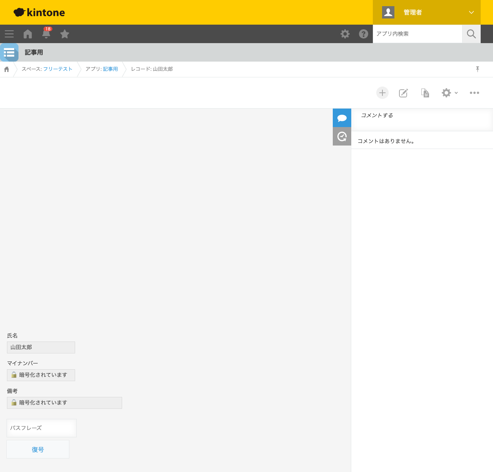
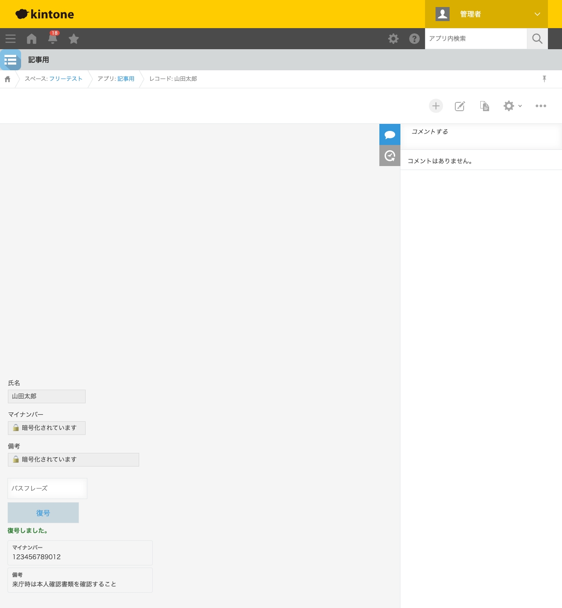

GovAppsプラグイン 安全性を確認できる無料kintoneプラグイン集
口座番号のような機微な個人情報をkintoneで扱う場合、画面表示を隠す「マスキング」だけでは 不十分です。kintoneのREST APIは保存されている生の値をそのまま返すため、マスキングは値そのものを 守っていません。この記事では、無料プラグインでフィールドの値そのものをブラウザ内で暗号化して 保存する方法を、実際の設定画面と暗号化・復号結果つきで解説します。
マイナンバー(個人番号)を取り扱う場合の注意: マイナンバーの利用・保管には 番号法(マイナンバー法)等に基づく別途の法令要件があり、本プラグインによる暗号化だけで これらの要件を満たせるとは限りません。マイナンバーをkintoneで扱うかどうか、扱う場合の方法は、 必ず組織のセキュリティ担当・個人情報保護担当にご確認のうえご判断ください。
kintoneの標準機能には、フィールドの値を暗号化して保存する機能はありません。アクセス権設定で 閲覧できるユーザーを絞ることはできますが、これは「誰が見られるか」の制御であり、値そのものは 平文のままREST APIから取得できます。JavaScriptカスタマイズを自作すれば、Web Crypto APIを使った 暗号化・復号ロジックを実装できますが、鍵の導出方式・保存フォーマット・編集時に復号しなかった フィールドの暗号文を保持し続ける処理まで含めると、簡単な作業ではありません。
「フィールドの値そのものを暗号化して保存する」機能を用意する方法は、大きく4つあります。 それぞれの向き不向きをまとめました。
| 方法 | 向いている場合 | 注意点 |
|---|---|---|
| kintone標準のアクセス権設定のみ | 閲覧できるユーザーを絞るだけで十分な場合 | 値そのものはREST API経由で平文のまま取得できる |
| JavaScriptを自作する | 社内に開発者がいて、独自の暗号方式・鍵管理が必要な場合 | 暗号化・復号ロジック、編集時のデータ保護処理の実装・保守が必要 |
| 有料の他社プラグイン | 予算があり、より高度な鍵管理を求める場合 | 月額課金が発生する。ソースコードが非公開で、暗号化方式を利用者側で確認しにくいことが多い |
| GovAppsプラグイン(このプラグイン) | 無料で試したい、社内・庁内でセキュリティを確認してから導入したい場合 | パスフレーズを紛失すると暗号化データは永久に復号できない |
GovAppsのプラグインはすべて無料・広告なしで、追加課金なしで使い続けられます。 ソースコードはGitHubで全公開しているオープンソースなので、 「本当にAES-256-GCMで暗号化しているか」「パスフレーズをどこにも保存していないか」を 自治体・企業のセキュリティ担当者自身の目で確認できます(このプラグインも個別ページにセキュリティレビュー結果を掲載しています)。
フィールド暗号化プラグインは、暗号化対象フィールド・ 復号ボタンの設置場所・パスフレーズの最小文字数を設定するだけで使えます。今回は「氏名」 (暗号化対象外)・「口座番号」「備考」(いずれも暗号化対象)を持つアプリで設定しました。

レコード追加画面で氏名・口座番号・備考を入力すると、パスフレーズの設定欄が表示されます。
パスフレーズを入力して保存すると、口座番号・備考の値はレコード保存時にブラウザ内で
AES-256-GCM暗号化されます。REST APIで取得した生の値を確認したところ、
FE1:接頭辞のbase64文字列(暗号文)になっており、入力した口座番号の数字列は
一切含まれていませんでした。
詳細画面を開くと、暗号化済みのフィールドは「🔒 暗号化されています」という表示に置き換わり、 パスフレーズを入力しない限り値は読めません。

正しいパスフレーズを入力して「復号」を押すと、入力欄の下に平文の値が表示されます。 元のフィールド自体は暗号化されたままで、復号結果は別枠に一時的に表示される仕組みです。誤った パスフレーズを入力した場合はエラーになり、平文が漏れることはありません。
